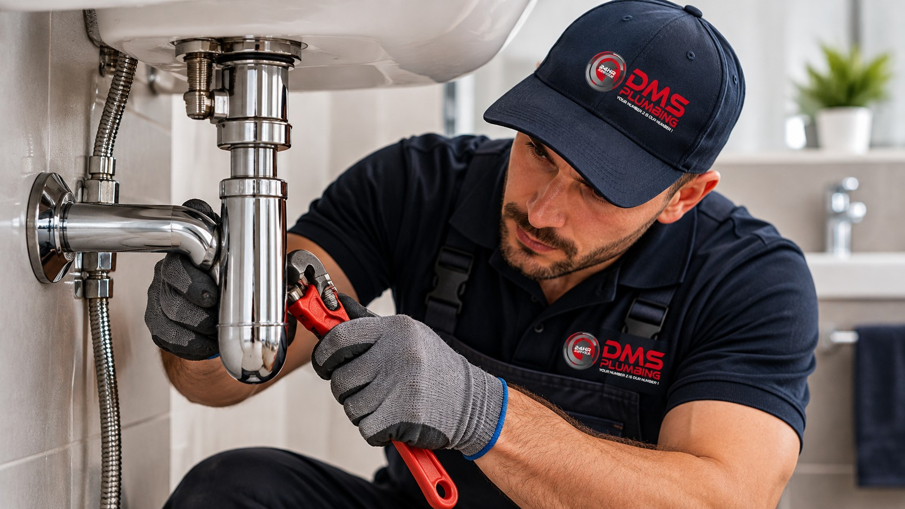

About DMS Plumbing
Learn more about DMS Plumbing, our history, experience and approach to plumbing services.

Who We Are
DMS Plumbing is an owner-managed plumbing company established in 1999 by Darren Michael Smithson.
The company provides plumbing services to residential, commercial, retail and hospitality customers.
It assists with plumbing needs in homes, offices, shops, restaurants, hotels and other properties.
Our History
DMS Plumbing was established in 1999. Since then, the company has gained experience in the plumbing service industry.
It has worked with different types of customers and continues to provide services in Johannesburg and surrounding areas.
Our Approach
DMS Plumbing focuses on professional service and practical solutions.
The company aims to understand each customer's plumbing problem and communicate clearly about the service required.
Experience and Reliability
DMS Plumbing has trained and qualified plumbers who provide services to domestic and commercial customers.
The company assists with common plumbing problems, repairs and maintenance.
DMS Plumbing is available 24 hours a day, 7 days a week for plumbing emergencies.
Contact Our Team
Find out more about our plumbing services or send us an enquiry.
Make an Enquiry